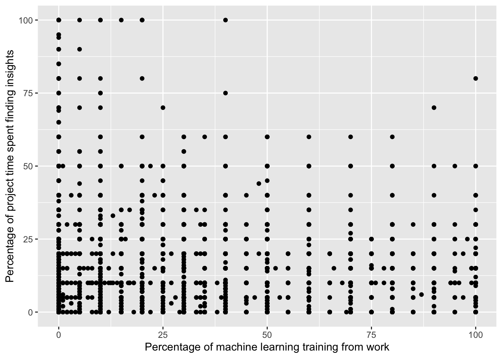

Code
library(tidyverse)
library(ggplot2)
library(dplyr)
library(viridis)
library(car)
knitr::opts_chunk$set(echo = TRUE)library(tidyverse)
library(ggplot2)
library(dplyr)
library(viridis)
library(car)
knitr::opts_chunk$set(echo = TRUE)The dataset I am using comes from Kaggle https://www.kaggle.com/datasets/kaggle/kaggle-survey-2018 and is a survey titled “2018 Kaggle Machine Learning & Data Science Survey” conducted by Kaggle to capture the current state of machine learning and data science usage, mainly at the enterprise and academic level. The dataset contains survey responses from almost 24,000 respondents from varying backgrounds. The survey contains 50 questions, including 9 demographic questions and 41 questions around machine learning and data science. The questions range from platforms and products used, and tools and methodology, barriers to entry, and more. It also asks respondents about their employee experience working in these fields. I believe that the wide array of types of questions used make this dataset a good fit for research, as there are binary and categorical variables to explore but also some that ask for explicit numeric values like what percentage of their work falls to different tasks. Having several different types of questions provide opportunities for multiple types of models to be performed.
This survey was also run in 2017, 2019, and 2020 on Kaggle as part of an annual competition where users could submit code and analysis using this public data. However, I decided to use the 2018 dataset as my focus because certain questions that I think would be really interesting to analyze were omitted in later years/the survey was shortened overall. This survey was hosted by Kaggle, open to anyone in the industry, for one week in October 2018.
Reading in the dataset –
final <- read_csv("_data/final_project_data.csv")Warning: One or more parsing issues, see `problems()` for detailsRows: 23304 Columns: 409
── Column specification ────────────────────────────────────────────────────────
Delimiter: ","
chr (347): Q1, Q2, Q3, Q4, Q5, Q6, Q7, Q7_RCSTUD, Q7_RCTECH, Q8, Q9, Q10, Q1...
dbl (58): Time from Start to Finish (seconds), Q1_OTHER_TEXT, Q6_OTHER_TEXT...
lgl (4): Q28_Part_22, Q29_Part_16, Q38_Part_19, Q38_Part_20
ℹ Use `spec()` to retrieve the full column specification for this data.
ℹ Specify the column types or set `show_col_types = FALSE` to quiet this message.head(final,10)# A tibble: 10 × 409
Time from…¹ Q1 Q1_OT…² Q2 Q3 Q4 Q5 Q6 Q6_OT…³ Q7 Q7_RC…⁴
<dbl> <chr> <dbl> <chr> <chr> <chr> <chr> <chr> <dbl> <chr> <chr>
1 959 Male -1 35-39 Chile Doct… Info… Other 1 Acad… Non-st…
2 1512 Male -1 18-21 India Bach… Comp… Stud… -1 Acad… Non-st…
3 848 Male -1 22-24 Denm… Bach… Engi… Stud… -1 Acad… Non-st…
4 2309 Male -1 30-34 China Doct… Other Rese… -1 Acad… Non-st…
5 1487 Male -1 18-21 China Bach… Comp… Stud… -1 Acad… Non-st…
6 790 Male -1 25-29 China Mast… Engi… Stud… -1 Acad… Non-st…
7 2986 Male -1 40-44 India Doct… Comp… Other 7 Acad… Non-st…
8 1255 Male -1 18-21 India Some… Engi… Stud… -1 Acad… Non-st…
9 825 Male -1 25-29 India Bach… Comp… Data… -1 Acad… Non-st…
10 1315 Male -1 18-21 India Bach… Engi… Stud… -1 Acad… Non-st…
# … with 398 more variables: Q7_RCSTUDY <dbl>, Q7_RCSTUDN <dbl>,
# Q7_RCSTUD2 <dbl>, Q7_RCTECH <chr>, Q7_RCTECH2 <dbl>, Q7_OTHER_TEXT <dbl>,
# Q8 <chr>, Q8RC <dbl>, Q9 <chr>, Q10 <chr>, Q11_Part_1 <chr>,
# Q11_Part_1RC <dbl>, Q11_Part_1RC2 <chr>, Q11_Part_2 <chr>,
# Q11_Part_3 <chr>, Q11_Part_4 <chr>, Q11_Part_5 <chr>, Q11_Part_6 <chr>,
# Q11_Part_7 <chr>, Q11_OTHER_TEXT <dbl>, Q12_MULTIPLE_CHOICE <chr>,
# Q12_Part_1_TEXT <dbl>, Q12_Part_2_TEXT <dbl>, Q12_Part_3_TEXT <dbl>, …finalrc <- final %>%
rename(Percent_Time_Insights = Q34_Part_6) %>%
rename(Years_Machine_Learning = Q25) %>%
rename(Years_Writing_Code = Q24) %>%
rename(Years_Machine_LearningRC = Q25RC) %>%
rename(Years_Writing_CodeRC = Q24RC) %>%
rename(Percent_Time_GatherData = Q34_Part_1) %>%
rename(Percent_Time_Coding = Q23) %>%
rename(Percent_Time_CodingRC = Q23RC) %>%
rename(AnalyzeDataRC = Q11_Part_1RC) %>%
rename(AnalyzeData = Q11_Part_1) %>%
rename(Years_In_Role = Q8RC)Upon doing a cursory search around this data, I see some high level executive-summary style research published about this data set, but I wasn’t able to find anything focused on more specific research questions. It was more demographic data of the state of ML and Data Science. I think there is the opportunity to speak more specifically about the state of machine learning and data science, and look deeper at what tools students and employees are using versus what their time is devoted to.
Based on feedback from both parts of the final submissions, I kept my area of focus narrow. There is a huge amount of data within this dataset, but as this project is focused on performing regression modeling, I think the best fit for my main research question is as follows:
How does an individual’s background, experience, and time in their field/role impact what their day to day looks like?
I used questions from the survey like “During a typical data science project at work or school, approximately what proportion of your time is devoted to the following?” as this question supplies exact numbers that I could correlate against demos and more general usage of tools and platforms to see if there is any connection between the work one does and the tools they use.
I am interested in this dataset because a lot of research in my career is in the machine learning space, so I am always interested in contextualizing the employee experience in these areas so that I can better understand the subject of some of my survey research. I also do more general employee engagement research in my career and I think this final is a great opportunity to try my hand at some correlations that would be similar to the ones I would like to eventually run at my job, but have never been able to because I don’t have any prior stats knowledge.
The hypothesis I would like to test is:
Those with more years of experience in machine learning/coding will spend a larger proportion of their time doing analyzing and decision making, as opposed to those newer to the job will spend more time cleaning data and doing actual coding.
The below variables are the primary ones I used:
Independent variable (original name followed by recoded name): Q24/Years_Writing_Code, How long have you been writing code to analyze data?
Dependent variable: Q34_Part_6/Percent_Time_Insights, During a typical data science project at work or school, approximately what proportion of your time is devoted to the following? (Answers must add up to 100%) - Finding insights in the data and communicating with stakeholders
The below variables were used as confounding variables to the independent variable, or as alternative dependent variables to test that could give me opposite results to test essentially the second half of my hypothesis statement:
Confounding variable 1 - Q8/Years_In_Role, How many years of experience do you have in your current role?
Confounding variable 2 - Q25/Years_Machine_Learning For how many years have you used machine learning methods (at work or in school)?
Other alternative dependent - Q11_1/AnalyzeData,Select any activities that make up an important part of your role at work: (Select all that apply) - Analyze and understand data to influence product or business decisions
Other alternative dependent - Q23/Percent_Time_Coding, Approximately what percent of your time at work or school is spent actively coding?
Other alternative dependent - Q34_Part_1/Percent_Time_GatherData During a typical data science project at work or school, approximately what proportion of your time is devoted to the following? - Gathering data
I described my dataset at the top of this as well as discussed variables of interest in the Research Question section, but here is a little bit of exploratory code to give a general feel for what the data looks like:
I can see the data contains mostly younger males, but because of the sample size can really work with lots of demographic combinations.
ggplot(finalrc, aes(x = Q1)) +
geom_bar() +
labs(x="Gender")
ggplot(finalrc, aes(x = Q2)) +
geom_bar() +
labs(x="Age") +
theme(axis.text.x = element_text(angle = 45, vjust = 1, hjust=1))
There is also a range of coding experience in the dataset.
ggplot(finalrc, aes(x = Years_Writing_Code)) +
geom_bar() +
labs(x="Years of coding experience") +
theme(axis.text.x = element_text(angle = 45, vjust = 1, hjust=1))The data is split between students, tech industry employees, and other industry employees.
ggplot(finalrc, aes(x = Q7)) +
geom_bar() +
labs(x="Industry") +
theme(axis.text.x = element_text(angle = 45, vjust = 1, hjust=1))
Here, I made a scatterplot showing where the amount of training from work meets the amount of time spent finding insights instead of cleaning data, coding, etc. I expected this to be much higher for those who received most or all of their training from work, but that isn’t the case.
ggplot(finalrc, aes(x = Q35_Part_3, y=Percent_Time_Insights)) +
geom_point() +
labs(x="Percentage of machine learning training from work", y="Percentage of project time spent finding insights")Warning: Removed 7559 rows containing missing values (geom_point).
Hypothesis: Those with more years of experience in machine learning/coding will spend a larger proportion of their time doing analyzing and decision making, as opposed to those newer to the job will spend more time cleaning data and doing actual coding.
Since the variables are in text format in the survey, I recoded the ones needed into a numerical format that gives a corresponding number in ascending order to match the level of experience the respondent reports (i.e, 1 = one year/lowest categorical, ascending from there).
forplot <- finalrc %>%
drop_na(Percent_Time_Insights, Years_Machine_Learning, Years_Writing_Code, Years_Machine_LearningRC, Years_Writing_CodeRC, Percent_Time_GatherData, Percent_Time_Coding, Percent_Time_CodingRC)
forplot$time <- as.character(forplot$Years_Writing_Code)
forplot$anpercent <- as.character(forplot$Percent_Time_Insights)
table(forplot$time, forplot$anpercent)
0 1 10 100 11 12 13 14 15 16 17 18 19
< 1 year 899 22 1141 7 1 5 3 4 331 1 2 8 2
1-2 years 986 18 1466 3 1 5 4 3 427 1 4 4 2
10-20 years 198 6 300 1 1 1 4 1 91 0 1 1 0
20-30 years 63 2 85 0 0 0 0 0 24 0 0 0 0
3-5 years 736 6 1056 3 2 4 5 4 349 1 2 9 2
30-40 years 20 0 30 0 0 0 0 0 5 0 1 0 0
40+ years 17 1 12 1 0 0 0 0 8 0 0 0 0
5-10 years 349 9 626 3 0 2 1 0 165 1 1 1 1
2 20 22 23 24 25 27 28 3 30 32 33 34
< 1 year 24 544 1 1 1 117 0 1 14 159 0 1 1
1-2 years 27 701 0 3 1 117 1 1 23 196 2 1 0
10-20 years 7 143 1 0 0 19 0 0 4 53 0 1 1
20-30 years 4 50 0 1 0 10 0 0 1 16 0 0 0
3-5 years 29 547 1 0 1 110 0 3 22 151 1 0 0
30-40 years 0 17 0 0 0 4 0 0 0 5 0 0 0
40+ years 0 6 0 0 0 1 0 0 0 2 0 0 0
5-10 years 12 325 1 2 0 72 0 2 4 91 0 2 0
35 38 4 40 44 45 5 50 55 6 60 65 69
< 1 year 20 1 9 45 0 6 461 46 2 8 6 1 1
1-2 years 24 0 4 53 0 4 645 33 7 5 7 0 0
10-20 years 7 0 4 11 0 1 139 9 1 1 6 1 0
20-30 years 1 0 2 3 0 0 30 4 0 0 0 0 0
3-5 years 16 1 8 44 2 2 482 38 2 3 6 1 0
30-40 years 0 0 1 2 0 0 20 1 0 1 1 0 0
40+ years 1 0 1 0 0 0 7 0 0 0 0 0 0
5-10 years 4 0 3 29 0 2 243 14 1 0 2 0 0
7 70 75 8 80 85 9 90 94 95
< 1 year 11 2 1 24 4 2 15 0 0 1
1-2 years 11 3 2 12 1 0 7 2 0 0
10-20 years 1 1 1 4 0 0 1 0 0 0
20-30 years 1 0 1 1 0 0 2 1 0 0
3-5 years 17 1 1 12 1 0 7 0 0 1
30-40 years 0 0 0 0 1 0 1 0 0 0
40+ years 0 0 0 0 1 0 0 0 0 0
5-10 years 5 1 0 4 0 1 2 1 1 0For my first test, I run below an anova test with Percent of time finding insights as my dependent variable and Number of years writing code as my independent variable. As the p value is .008 rounded, the test shows that we can reject the null hypothesis that there is no relationship between these two variables, and we can assume a relationship between the percentage of time one spends analyzing data and how many years they have been writing code.
Years_Writing_CodeRC = Amount of years they have been coding Percent_Time_Insights = Proportion of time spent analyzing data
anovatest <- aov(Percent_Time_Insights ~ Years_Writing_CodeRC, data=forplot)
summary(anovatest) Df Sum Sq Mean Sq F value Pr(>F)
Years_Writing_CodeRC 1 838 838.2 7.094 0.00774 **
Residuals 15935 1882765 118.2
---
Signif. codes: 0 '***' 0.001 '**' 0.01 '*' 0.05 '.' 0.1 ' ' 1Now I am fitting a model using the same two variables: Years_Writing_CodeRC = Amount of years they have been coding Percent_Time_Insights = Proportion of time spent analyzing data
The p value here is much less than .05 at .008, which makes it significant, however the coefficient does not necessarily strongly support this p value as it is only .14 which would be considered relatively small.
fitmodel <- lm(Percent_Time_Insights ~ Years_Writing_CodeRC, data = forplot)
summary(fitmodel)
Call:
lm(formula = Percent_Time_Insights ~ Years_Writing_CodeRC, data = forplot)
Residuals:
Min 1Q Median 3Q Max
-12.573 -6.700 -1.554 7.591 88.591
Coefficients:
Estimate Std. Error t value Pr(>|t|)
(Intercept) 11.26307 0.16853 66.833 < 2e-16 ***
Years_Writing_CodeRC 0.14559 0.05466 2.663 0.00774 **
---
Signif. codes: 0 '***' 0.001 '**' 0.01 '*' 0.05 '.' 0.1 ' ' 1
Residual standard error: 10.87 on 15935 degrees of freedom
Multiple R-squared: 0.000445, Adjusted R-squared: 0.0003823
F-statistic: 7.094 on 1 and 15935 DF, p-value: 0.007741Plotting this model: Years_Writing_CodeRC = Amount of years they have been coding Percent_Time_Insights = Proportion of time spent analyzing data
plot(Percent_Time_Insights ~ Years_Writing_CodeRC, data = forplot, main = "Percentage of time analyzing data vs. time in field")Here I am filtering out those who say that they have less than 20% percent of time spent on analysis or that they aren’t involved in coding so that I can weed out the large number of zero percents.
Years_Writing_CodeRC = Amount of years they have been coding Percent_Time_Insights = Proportion of time spent analyzing data
forplot2 <- finalrc %>%
drop_na(Percent_Time_Insights, Years_Machine_Learning, Years_Writing_Code, Years_Machine_LearningRC, Years_Writing_CodeRC, Percent_Time_GatherData, AnalyzeData, Percent_Time_Coding, Percent_Time_CodingRC) %>%
filter(Percent_Time_Insights > 19, Years_Machine_LearningRC < 9, Years_Writing_CodeRC < 10, Percent_Time_GatherData > 19, Percent_Time_CodingRC > 2)
anovatest2 <- aov(Percent_Time_Insights ~ Years_Writing_CodeRC, data=forplot2)
summary(anovatest2) Df Sum Sq Mean Sq F value Pr(>F)
Years_Writing_CodeRC 1 83 83.33 0.966 0.326
Residuals 569 49102 86.30 This leaves me with a low sample size to work with, and causes it to be no longer significant and also a negative coefficient, so I’ll try a confounding variable added next.
Filtered chart:
fitmodel2 <- lm(Years_Writing_CodeRC ~ Percent_Time_Insights , data = forplot2)
summary(fitmodel2)
Call:
lm(formula = Years_Writing_CodeRC ~ Percent_Time_Insights, data = forplot2)
Residuals:
Min 1Q Median 3Q Max
-2.0928 -1.0928 -0.0928 0.9072 6.0079
Coefficients:
Estimate Std. Error t value Pr(>|t|)
(Intercept) 3.227158 0.181988 17.733 <2e-16 ***
Percent_Time_Insights -0.006717 0.006836 -0.983 0.326
---
Signif. codes: 0 '***' 0.001 '**' 0.01 '*' 0.05 '.' 0.1 ' ' 1
Residual standard error: 1.516 on 569 degrees of freedom
Multiple R-squared: 0.001694, Adjusted R-squared: -6.032e-05
F-statistic: 0.9656 on 1 and 569 DF, p-value: 0.3262plot(Percent_Time_Insights ~ Years_Writing_CodeRC, data = forplot2, main = "Percentage of time analyzing data vs. time in field")Here I added Q25 which is amount of years spent using machine learning in their work, and same as previously:
Years_Writing_CodeRC = Amount of years they have been coding Percent_Time_Insights = Proportion of time spent analyzing data Years_Machine_LearningRC = amount of years spent using machine learning in work
anovatest3 <- aov(Percent_Time_Insights ~ Years_Writing_CodeRC + Years_Machine_LearningRC, data=forplot)
summary(anovatest3) Df Sum Sq Mean Sq F value Pr(>F)
Years_Writing_CodeRC 1 838 838.2 7.097 0.00773 **
Years_Machine_LearningRC 1 939 938.9 7.950 0.00482 **
Residuals 15934 1881826 118.1
---
Signif. codes: 0 '***' 0.001 '**' 0.01 '*' 0.05 '.' 0.1 ' ' 1I can see in this model, amount of years spent using machine learning in their work is the most significant variable. The p value and the coefficient are stronger than the years writing code variable, although still not particularly strong.
fitmodel3 <- lm(Percent_Time_Insights ~ Years_Writing_CodeRC + Years_Machine_LearningRC , data = forplot)
summary(fitmodel3)
Call:
lm(formula = Percent_Time_Insights ~ Years_Writing_CodeRC + Years_Machine_LearningRC,
data = forplot)
Residuals:
Min 1Q Median 3Q Max
-12.882 -6.842 -1.577 7.511 88.710
Coefficients:
Estimate Std. Error t value Pr(>|t|)
(Intercept) 11.09128 0.17917 61.904 < 2e-16 ***
Years_Writing_CodeRC 0.08826 0.05831 1.514 0.13012
Years_Machine_LearningRC 0.11069 0.03926 2.820 0.00482 **
---
Signif. codes: 0 '***' 0.001 '**' 0.01 '*' 0.05 '.' 0.1 ' ' 1
Residual standard error: 10.87 on 15934 degrees of freedom
Multiple R-squared: 0.0009434, Adjusted R-squared: 0.000818
F-statistic: 7.523 on 2 and 15934 DF, p-value: 0.0005422Next I would like to try Q11 - “Select any activities that make up an important part of your role at work: Analyze and understand data to influence product or business decisions.” This is a categorical variable of yes vs no that is similar to the one I fit above but a bit more general. I will use an anova test since my independent variable of time in coding is also categorical.
forplot$yearscoding <- as.character(forplot$Years_Writing_CodeRC)
forplot$analyze <- as.character(forplot$AnalyzeDataRC)
table(forplot$yearscoding, forplot$analyze)
1 2
1 1282 2674
2 2304 2513
3 2115 1574
4 1289 694
6 683 339
7 181 121
8 60 50
9 34 24anova4 <- aov(analyze ~ yearscoding, data=forplot)
summary(anova4) Df Sum Sq Mean Sq F value Pr(>F)
yearscoding 7 222 31.68 134.1 <2e-16 ***
Residuals 15929 3762 0.24
---
Signif. codes: 0 '***' 0.001 '**' 0.01 '*' 0.05 '.' 0.1 ' ' 1Again, despite the strong p value, the model below does not give us a strong coefficient.
fitmodel4 <- lm(AnalyzeDataRC ~ Years_Writing_CodeRC , data = forplot)
summary(fitmodel4)
Call:
lm(formula = AnalyzeDataRC ~ Years_Writing_CodeRC, data = forplot)
Residuals:
Min 1Q Median 3Q Max
-0.6047 -0.4794 0.3953 0.4580 0.8966
Coefficients:
Estimate Std. Error t value Pr(>|t|)
(Intercept) 1.667357 0.007600 219.39 <2e-16 ***
Years_Writing_CodeRC -0.062662 0.002465 -25.42 <2e-16 ***
---
Signif. codes: 0 '***' 0.001 '**' 0.01 '*' 0.05 '.' 0.1 ' ' 1
Residual standard error: 0.4902 on 15935 degrees of freedom
Multiple R-squared: 0.03897, Adjusted R-squared: 0.03891
F-statistic: 646.2 on 1 and 15935 DF, p-value: < 2.2e-16Since using Q11 gives similar results and is a less detailed variable, I think I will go back to analyzing “During a typical data science project at work or school, approximately what proportion of your time is devoted to the following? - Finding insights in the data and communicating with stakeholders” and add “How many years of experience do you have in your current role?” as a confounding variable.
Below I am adding in Years_In_Role as a confounding variable “How many years of experience do you have in your current role?” as amount of time in role could mean that they are relied less on for data collection and cleaning and more analyzing of data. Here my p-values for both variables are very small so I think the confounding variable had an impact. These are also the strongest coefficients I have had in any model. It makes sense that the time in role variable would be a negative coefficient because the less years would mean the more time they would spend doing an entry level task like data collection.
fitmodel5 <- lm(Percent_Time_Insights ~ Years_Writing_CodeRC + Years_In_Role, data = forplot)
summary(fitmodel5)
Call:
lm(formula = Percent_Time_Insights ~ Years_Writing_CodeRC + Years_In_Role,
data = forplot)
Residuals:
Min 1Q Median 3Q Max
-13.479 -6.862 -1.700 7.345 89.024
Coefficients:
Estimate Std. Error t value Pr(>|t|)
(Intercept) 11.53050 0.18917 60.952 < 2e-16 ***
Years_Writing_CodeRC 0.23106 0.06203 3.725 0.000196 ***
Years_In_Role -0.13099 0.03919 -3.343 0.000832 ***
---
Signif. codes: 0 '***' 0.001 '**' 0.01 '*' 0.05 '.' 0.1 ' ' 1
Residual standard error: 10.89 on 15107 degrees of freedom
(827 observations deleted due to missingness)
Multiple R-squared: 0.001166, Adjusted R-squared: 0.001034
F-statistic: 8.818 on 2 and 15107 DF, p-value: 0.0001488Overall, I am seeing that there is a relationship between work done in respondent’s roles and the amount of time that they have been coding or in their current role. I wish that there was more numerical data within this dataset that I could use to supplement these findings.
Below I am plotting the two variables used in my final model.
ggplot(forplot, aes(x = Years_In_Role, y = Percent_Time_Insights)) +
geom_point(color="black") +
geom_smooth(method = "lm", se = F, color = "black") +
theme( panel.background = element_rect(fill = "grey"),
axis.text = element_text(color = "black")) +
ggtitle("Years In Current Role vs. Percent of Time Spent on Insights") `geom_smooth()` using formula 'y ~ x'Warning: Removed 827 rows containing non-finite values (stat_smooth).Warning: Removed 827 rows containing missing values (geom_point).ggplot(forplot, aes(x = Years_Writing_CodeRC, y = Percent_Time_Insights)) +
geom_point(color="black") +
geom_smooth(method = "lm", se = F, color = "black") +
theme( panel.background = element_rect(fill = "grey"),
axis.text = element_text(color = "black"))+
ggtitle("Years Experience Writing Code vs. Percent of Time Spent on Insights") `geom_smooth()` using formula 'y ~ x'Below I am summarizing each model and also finding the AIC/BIC.
summary(fitmodel2)
Call:
lm(formula = Years_Writing_CodeRC ~ Percent_Time_Insights, data = forplot2)
Residuals:
Min 1Q Median 3Q Max
-2.0928 -1.0928 -0.0928 0.9072 6.0079
Coefficients:
Estimate Std. Error t value Pr(>|t|)
(Intercept) 3.227158 0.181988 17.733 <2e-16 ***
Percent_Time_Insights -0.006717 0.006836 -0.983 0.326
---
Signif. codes: 0 '***' 0.001 '**' 0.01 '*' 0.05 '.' 0.1 ' ' 1
Residual standard error: 1.516 on 569 degrees of freedom
Multiple R-squared: 0.001694, Adjusted R-squared: -6.032e-05
F-statistic: 0.9656 on 1 and 569 DF, p-value: 0.3262AIC(fitmodel2)[1] 2099.603BIC(fitmodel2)[1] 2112.646summary(fitmodel3)
Call:
lm(formula = Percent_Time_Insights ~ Years_Writing_CodeRC + Years_Machine_LearningRC,
data = forplot)
Residuals:
Min 1Q Median 3Q Max
-12.882 -6.842 -1.577 7.511 88.710
Coefficients:
Estimate Std. Error t value Pr(>|t|)
(Intercept) 11.09128 0.17917 61.904 < 2e-16 ***
Years_Writing_CodeRC 0.08826 0.05831 1.514 0.13012
Years_Machine_LearningRC 0.11069 0.03926 2.820 0.00482 **
---
Signif. codes: 0 '***' 0.001 '**' 0.01 '*' 0.05 '.' 0.1 ' ' 1
Residual standard error: 10.87 on 15934 degrees of freedom
Multiple R-squared: 0.0009434, Adjusted R-squared: 0.000818
F-statistic: 7.523 on 2 and 15934 DF, p-value: 0.0005422AIC(fitmodel3)[1] 121276.3BIC(fitmodel3)[1] 121307summary(fitmodel4)
Call:
lm(formula = AnalyzeDataRC ~ Years_Writing_CodeRC, data = forplot)
Residuals:
Min 1Q Median 3Q Max
-0.6047 -0.4794 0.3953 0.4580 0.8966
Coefficients:
Estimate Std. Error t value Pr(>|t|)
(Intercept) 1.667357 0.007600 219.39 <2e-16 ***
Years_Writing_CodeRC -0.062662 0.002465 -25.42 <2e-16 ***
---
Signif. codes: 0 '***' 0.001 '**' 0.01 '*' 0.05 '.' 0.1 ' ' 1
Residual standard error: 0.4902 on 15935 degrees of freedom
Multiple R-squared: 0.03897, Adjusted R-squared: 0.03891
F-statistic: 646.2 on 1 and 15935 DF, p-value: < 2.2e-16AIC(fitmodel4)[1] 22506.27BIC(fitmodel4)[1] 22529.3summary(fitmodel5)
Call:
lm(formula = Percent_Time_Insights ~ Years_Writing_CodeRC + Years_In_Role,
data = forplot)
Residuals:
Min 1Q Median 3Q Max
-13.479 -6.862 -1.700 7.345 89.024
Coefficients:
Estimate Std. Error t value Pr(>|t|)
(Intercept) 11.53050 0.18917 60.952 < 2e-16 ***
Years_Writing_CodeRC 0.23106 0.06203 3.725 0.000196 ***
Years_In_Role -0.13099 0.03919 -3.343 0.000832 ***
---
Signif. codes: 0 '***' 0.001 '**' 0.01 '*' 0.05 '.' 0.1 ' ' 1
Residual standard error: 10.89 on 15107 degrees of freedom
(827 observations deleted due to missingness)
Multiple R-squared: 0.001166, Adjusted R-squared: 0.001034
F-statistic: 8.818 on 2 and 15107 DF, p-value: 0.0001488AIC(fitmodel5)[1] 115051.7BIC(fitmodel5)[1] 115082.2Here is how each element ranks in comparison across models: AIC/BIC: Model 2 has the lowest AIC/BIC Adjusted R squared: Model 4 has the highest adjusted r-squared, but it only has one predictor variable included P-Value: Model 4 has the lowest p-value, but again only takes into account one predictor variable Multiple R-square: Model 4 has the highest value, indicating the strongest relationship between the variables Residuals:Model 2 has the lowest median in the residuals indicating a better fit
I think my second to last fitted model (4) is a fine model to use, but in this case I wanted to use a model that had multiple variables included. Since my final model (5) has the same predictor variable as model 4, plus one more variable added, that is the primary model I would explore.
Distributions in the below charts for this model appear normal. The residuals are normally distributed and the Q-Q plot follows a relatively diagonal line. I also checked below for signs of multicollinearity because my final model has two independent variables. The VIF value of 1.2 is not perfect but not very high so I don’t think it poses an issue in this model.
vif(fitmodel5)Years_Writing_CodeRC Years_In_Role
1.222315 1.222315 plot(fitted(fitmodel5), resid(fitmodel5))
plot(fitmodel5)Kaggle, (2018). “2018 Kaggle Machine Learning & Data Science Survey”, Retrieved 21 March 2023 from https://www.kaggle.com/datasets/kaggle/kaggle-survey-2018.
CC BY-SA 4.0 : https://creativecommons.org/licenses/by-sa/4.0/ :::